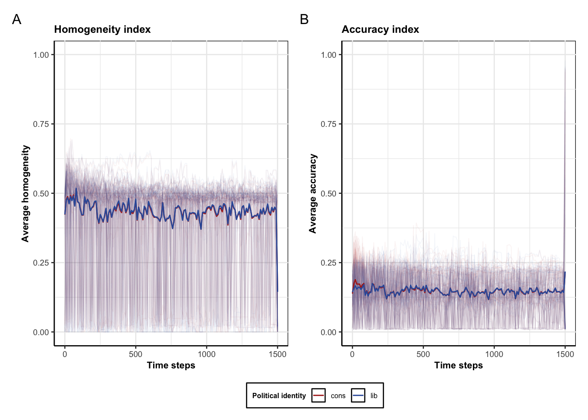

Tables, Figures, and Statistics for normalized simulations
Author
Nicolas Navarre, Julie Pedersen
note, this script is adapted to run on the sample data files on the OSF.
library(tidyverse)
── Attaching core tidyverse packages ──────────────────────── tidyverse 2.0.0 ──
✔ dplyr 1.1.4 ✔ readr 2.1.5
✔ forcats 1.0.0 ✔ stringr 1.5.1
✔ ggplot2 3.5.2 ✔ tibble 3.2.1
✔ lubridate 1.9.4 ✔ tidyr 1.3.1
✔ purrr 1.0.4
── Conflicts ────────────────────────────────────────── tidyverse_conflicts() ──
✖ dplyr::filter() masks stats::filter()
✖ dplyr::lag() masks stats::lag()
ℹ Use the conflicted package (<http://conflicted.r-lib.org/>) to force all conflicts to become errors
library(data.table)
Attaching package: 'data.table'
The following objects are masked from 'package:lubridate':
hour, isoweek, mday, minute, month, quarter, second, wday, week,
yday, year
The following objects are masked from 'package:dplyr':
between, first, last
The following object is masked from 'package:purrr':
transpose
library(ggstatsplot)
You can cite this package as:
Patil, I. (2021). Visualizations with statistical details: The 'ggstatsplot' approach.
Journal of Open Source Software, 6(61), 3167, doi:10.21105/joss.03167
library(patchwork)#main_dir <- "../data/example_data/" # data locationmain_dir <-"../data/normalized_data/"# data location
Rows: 15100 Columns: 5
── Column specification ────────────────────────────────────────────────────────
Delimiter: ","
chr (1): bin_pol
dbl (4): step, sim_id, acc, homog
ℹ Use `spec()` to retrieve the full column specification for this data.
ℹ Specify the column types or set `show_col_types = FALSE` to quiet this message.
No summary function supplied, defaulting to `mean_se()`
No summary function supplied, defaulting to `mean_se()`
No summary function supplied, defaulting to `mean_se()`
No summary function supplied, defaulting to `mean_se()`

# uncomment to save in size used in the paper#ggsave(filename = "hor_cluster_beta.png", path = main_dir, #width =17.5, height = 8, units = "cm", dpi = 1200)
Rows: 151 Columns: 2
── Column specification ────────────────────────────────────────────────────────
Delimiter: ","
dbl (2): step, cons_prop_corr
ℹ Use `spec()` to retrieve the full column specification for this data.
ℹ Specify the column types or set `show_col_types = FALSE` to quiet this message.
Rows: 747 Columns: 2
── Column specification ────────────────────────────────────────────────────────
Delimiter: ","
dbl (2): cons_prop, cluster_size
ℹ Use `spec()` to retrieve the full column specification for this data.
ℹ Specify the column types or set `show_col_types = FALSE` to quiet this message.
loc <-85cons_cor_cluster_plot <-ggplot(data = corr_data, aes(y = cons_prop_corr,x=step))+geom_hline(yintercept =0, linetype ="dashed", colour ="#D55E00")+ylim(-0.1,0.1)+geom_line(linewidth =0.5, colour =" black")+geom_point(aes(corr_data$cons_prop_corr[loc], x = loc), shape =4, colour="#56B4E9")+labs(y ="Average Correlation", x="Time steps", title ="Conservative-cluster size correlation")+theme_ggstatsplot() +theme(panel.background =element_rect(fill ="white", color ="black", linetype ="solid"),strip.background =element_rect(fill ="white", color ="white"),strip.text =element_text(size =8),axis.text =element_text(size =7),plot.title =element_text(size =9),axis.title =element_text(size =8),axis.line =element_line(color ="black"))cons_cluster_plot <-ggplot(data = size_prop_data, aes(y = cons_prop,x=cluster_size))+geom_point(alpha =0.5, size =0.5)+stat_smooth(method ="lm", col ="#56B4E9", se = F, linewidth =0.5)+labs(y ="Conservative proportion", x="Cluster Size", color ="Political identity", title ="Time Step 85")+theme_ggstatsplot() +theme(panel.background =element_rect(fill ="white", color ="black", linetype ="solid"),strip.background =element_rect(fill ="white", color ="white"),strip.text =element_text(size =8),axis.text =element_text(size =7),plot.title =element_text(size =9),axis.title =element_text(size =8),axis.line =element_line(color ="black"))(cons_cor_cluster_plot / cons_cluster_plot) +plot_layout(heights =c(2/3, 1/3))+plot_annotation(tag_levels ='A')
Warning in geom_point(aes(corr_data$cons_prop_corr[loc], x = loc), shape = 4, : All aesthetics have length 1, but the data has 150 rows.
ℹ Please consider using `annotate()` or provide this layer with data containing
a single row.
`geom_smooth()` using formula = 'y ~ x'
# uncomment to save in size used in the paperggsave(filename ="ver_cor_cluster_beta.png", path = main_dir, width =8.2, height =10, units ="cm", dpi =1200)
Warning in geom_point(aes(corr_data$cons_prop_corr[loc], x = loc), shape = 4, : All aesthetics have length 1, but the data has 150 rows.
ℹ Please consider using `annotate()` or provide this layer with data containing
a single row.
`geom_smooth()` using formula = 'y ~ x'
Moral values
mf_files <-list.files(path =str_c(main_dir, "simulation_data/"), pattern ="*.csv", full.names = T)mf_data <-data.table()i <-1for (f in mf_files) { cur <-fread(f) cur <- cur[, "group":= i] i <- i +1 mf_data <-rbind(cur, mf_data)}rm(cur)# tidymfs <-c("care", "fairness", "ingroup", "authority", "purity")# pivot longer and add mean and sds for each beta distributionmf_data_long <-melt(mf_data, measure.vars =patterns("_a$", "_b$"),value.name =c("a", "b"), variable.factor = T,variable.name ="mf") [, mf :=factor(mf, labels = mfs) ] [, "mean":= a / (a + b)]#Capitalise group names for plotting purposesmf_data_long$bin_pol<-factor(mf_data_long$bin_pol, labels =c("Conservative", "Liberal"))mf_data_long$mf <-factor(mf_data_long$mf, labels =c("Care", "Fairness", "Ingroup loyalty", "Authority", "Purity"))#tidy for memory purposesrm(mf_data)gc()
used (Mb) gc trigger (Mb) limit (Mb) max used (Mb)
Ncells 2445677 130.7 4027808 215.2 NA 4027808 215.2
Vcells 28695992 219.0 83330821 635.8 16384 85467709 652.1
average sd - start and finish
mf_data_long[step %in%c(0,1000),.(sd =mean(sqrt((a*b)/(((a+b)^2)*(a + b +1))))), by=.(mf, bin_pol,step)] |>arrange(bin_pol,step,sd)
mf bin_pol step sd
<fctr> <fctr> <int> <num>
1: Purity Conservative 0 0.17088823
2: Authority Conservative 0 0.17135225
3: Care Conservative 0 0.17503103
4: Ingroup loyalty Conservative 0 0.17581599
5: Fairness Conservative 0 0.17774827
6: Authority Conservative 1000 0.02411654
7: Care Conservative 1000 0.02415515
8: Ingroup loyalty Conservative 1000 0.02416056
9: Fairness Conservative 1000 0.02416562
10: Purity Conservative 1000 0.02417677
11: Fairness Liberal 0 0.15561155
12: Care Liberal 0 0.15715665
13: Purity Liberal 0 0.15720739
14: Authority Liberal 0 0.18238696
15: Ingroup loyalty Liberal 0 0.18307561
16: Fairness Liberal 1000 0.02402241
17: Care Liberal 1000 0.02402683
18: Ingroup loyalty Liberal 1000 0.02423548
19: Authority Liberal 1000 0.02423628
20: Purity Liberal 1000 0.02429585
mf bin_pol step sd
time plots
# mean log time ----mean_time_log_plot <-ggplot(data = mf_data_long, aes(y = mean,x=step))+stat_summary(geom ="line", alpha =0.05, aes(colour = mf, group =interaction(group, bin_pol, mf)))+stat_summary(geom ="line",aes(colour = mf))+facet_grid(~bin_pol)+scale_color_manual(values=c("#CC79A7", "#D55E00", "#56B4E9", "#E69F00", "#009E73"))+ylim(0,1)+scale_x_log10()+labs(y ="Average Beta mean", x="Time steps", color ="")+theme_ggstatsplot() +theme(panel.background =element_rect(fill ="white", color ="black", linetype ="solid"),strip.background =element_rect(fill ="white", color ="white"),axis.line =element_line(color ="black"),strip.text =element_text(size =8),axis.text =element_text(size =7),axis.title =element_text(size =8),legend.background =element_rect(fill ="white", color ="black"))# rand mean time ----mean_time_plot <-ggplot(data = mf_data_long, aes(y = mean,x=step))+stat_summary(geom ="line", alpha =0.05, aes(colour = mf, group =interaction(group, bin_pol, mf)))+stat_summary(geom ="line",aes(colour = mf))+facet_grid(~bin_pol)+scale_color_manual(values=c("#CC79A7", "#D55E00", "#56B4E9", "#E69F00", "#009E73"))+ylim(0,1)+labs(y ="Average Beta mean", x="Time steps", color ="")+theme_ggstatsplot() +theme(panel.background =element_rect(fill ="white", color ="black", linetype ="solid"),strip.background =element_rect(fill ="white", color ="white"),strip.text =element_text(size =8),axis.text =element_text(size =7),axis.title =element_text(size =8),axis.line =element_line(color ="black"),legend.background =element_rect(fill ="white", color ="black"))# plot laytot ----(mean_time_plot | mean_time_log_plot) +plot_annotation(tag_levels ="A")+plot_layout(guides ="collect") &theme(legend.position='bottom',legend.key.size =unit(0.4, "cm"),legend.text =element_text(size =6),legend.title =element_text(size =6))
No summary function supplied, defaulting to `mean_se()`
No summary function supplied, defaulting to `mean_se()`
No summary function supplied, defaulting to `mean_se()`
No summary function supplied, defaulting to `mean_se()`
Warning: Removed 24735 rows containing non-finite outside the scale range
(`stat_summary()`).
No summary function supplied, defaulting to `mean_se()`
No summary function supplied, defaulting to `mean_se()`
Warning: Removed 24735 rows containing non-finite outside the scale range
(`stat_summary()`).
No summary function supplied, defaulting to `mean_se()`
No summary function supplied, defaulting to `mean_se()`
# save plot ----# uncomment to save in size used in the paper#ggsave(filename = "hor_time_priors.png", path = main_dir, # width =17, height = 6, units = "cm", dpi = 1200)